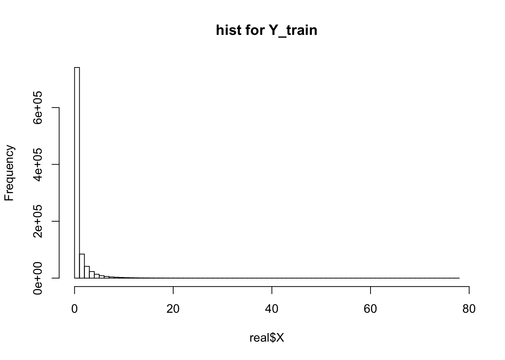
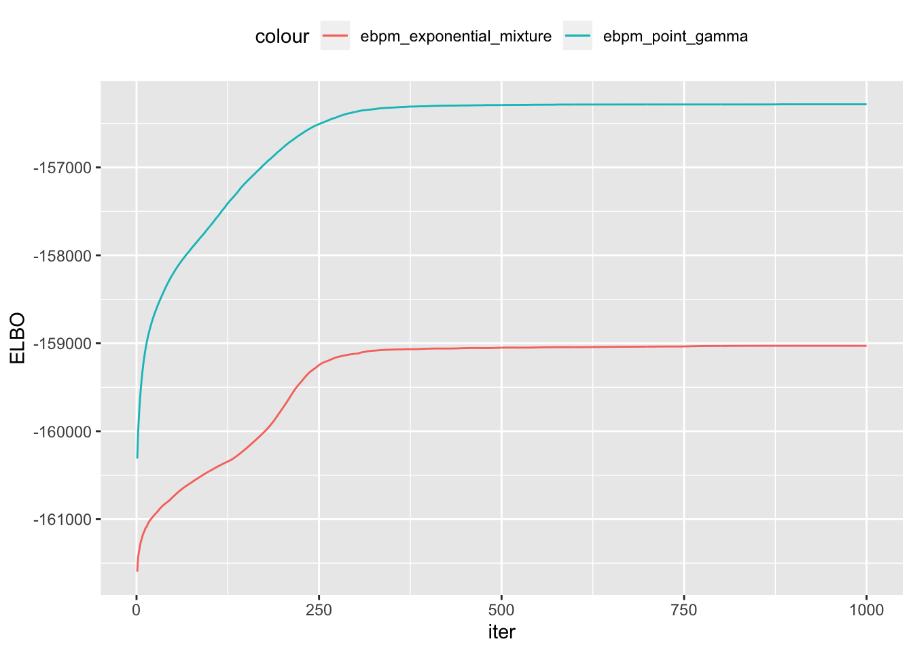

Last updated: 2019-10-26
Checks: 7 0
Knit directory: ebpmf_demo/
This reproducible R Markdown analysis was created with workflowr (version 1.4.0). The Checks tab describes the reproducibility checks that were applied when the results were created. The Past versions tab lists the development history.
Great! Since the R Markdown file has been committed to the Git repository, you know the exact version of the code that produced these results.
Great job! The global environment was empty. Objects defined in the global environment can affect the analysis in your R Markdown file in unknown ways. For reproduciblity it’s best to always run the code in an empty environment.
The command set.seed(20190923) was run prior to running the code in the R Markdown file. Setting a seed ensures that any results that rely on randomness, e.g. subsampling or permutations, are reproducible.
Great job! Recording the operating system, R version, and package versions is critical for reproducibility.
Nice! There were no cached chunks for this analysis, so you can be confident that you successfully produced the results during this run.
Great job! Using relative paths to the files within your workflowr project makes it easier to run your code on other machines.
Great! You are using Git for version control. Tracking code development and connecting the code version to the results is critical for reproducibility. The version displayed above was the version of the Git repository at the time these results were generated.
Note that you need to be careful to ensure that all relevant files for the analysis have been committed to Git prior to generating the results (you can use wflow_publish or wflow_git_commit). workflowr only checks the R Markdown file, but you know if there are other scripts or data files that it depends on. Below is the status of the Git repository when the results were generated:
Ignored files:
Ignored: .Rhistory
Ignored: .Rproj.user/
Untracked files:
Untracked: analysis/.ipynb_checkpoints/
Untracked: analysis/Experiment_ebpmf.Rmd
Untracked: analysis/ebpmf_demo.Rmd
Untracked: analysis/ebpmf_rank1_demo2.Rmd
Untracked: analysis/softmax_experiments.ipynb
Untracked: data/Compare_ebpmf_nmf2_out
Untracked: data/Compare_ebpmf_nmf2_out_ver2.Rds
Untracked: data/trash/
Untracked: verbose_log_1571583163.21966.txt
Untracked: verbose_log_1571583324.71036.txt
Untracked: verbose_log_1571583741.94199.txt
Untracked: verbose_log_1571588102.40356.txt
Unstaged changes:
Modified: analysis/Compare_ebpmf_nmf.Rmd
Modified: analysis/Compare_ebvaepm_ebpm.Rmd
Modified: analysis/softmax_experiments.Rmd
Modified: data/Compare_ebpmf_nmf2_out.Rds
Note that any generated files, e.g. HTML, png, CSS, etc., are not included in this status report because it is ok for generated content to have uncommitted changes.
These are the previous versions of the R Markdown and HTML files. If you’ve configured a remote Git repository (see ?wflow_git_remote), click on the hyperlinks in the table below to view them.
| File | Version | Author | Date | Message |
|---|---|---|---|---|
| Rmd | 5a06e0f | zihao12 | 2019-10-26 | update comparison |
| html | 772deb6 | zihao12 | 2019-10-25 | Build site. |
| Rmd | e0b50f5 | zihao12 | 2019-10-25 | update Compare_ebpmf_nmf2 |
| Rmd | 2714206 | zihao12 | 2019-10-25 | run more iterations for Compare_ebpmf_nmf2 |
| html | 2714206 | zihao12 | 2019-10-25 | run more iterations for Compare_ebpmf_nmf2 |
| Rmd | 2f2d275 | zihao12 | 2019-10-25 | Compare_ebpmf_nmf2.Rmd |
| Rmd | 7d1140c | zihao12 | 2019-10-25 | update some analysis |
I compare ebpmf with nmf algorithms on 10xgenomics dataset cd14_monocytes (\(\text{n-sample} = 2611, \text{n-feature} = 359\)). Training set \(X_{ij} = Binomial(data_{ij}, 0.5)\), and validation set is \(Y_{ij} = data_{ij} - X{ij}\).
ebpmf methods, the ELBO does not correspond to the validation loglikelihood: ebpmf-point-gamma has much higher ELBO than ebpmf-exponential-mixture, but the validation loglikelihood is worse. Will investigaet into thatebpmf does better than nnmf on validation set.NNLM::nnmf: I initialized it using init = list(W0 = ..., H0 = ...) and got the best training and validation loglikelihood among all algorithms. This specification means fitting \[
A \approx WH + W_0 H_1 + W_1 H_0
\] in https://cran.r-project.org/web/packages/NNLM/vignettes/Fast-And-Versatile-NMF.pdf section Content deconvolution and designable factorizationdevtools::load_all("../ebpmf")
devtools::load_all("../ebpm")
library(ebpmf)
library(gtools)
library(NNLM)
library(ggplot2)10X genomics dataset
X = read.csv("data/10xgenomics/cd14_monocytes/filtered_matrices_mex/hg19/Y.csv")
Y = read.csv("data/10xgenomics/cd14_monocytes/filtered_matrices_mex/hg19/Yhat.csv")
X = as.matrix(X)
Y = as.matrix(Y)
rownames(X) = NULL
colnames(X) = NULL
rownames(Y) = NULL
colnames(Y) = NULL
real = list(X = as.matrix(X), Y = as.matrix(Y))
print(dim(real$X))[1] 2611 359hist(real$X, breaks = 100, main = "hist for Y_train")
| Version | Author | Date |
|---|---|---|
| e3bb713 | zihao12 | 2019-10-25 |
K = 3
maxiter = 1000
method = c()
ll_train = c()
ll_val = c()
out = list()out = readRDS("data/Compare_ebpmf_nmf2_out.Rds")
## Run ebpmf_exponential_mixture
method_ = "ebpmf_exponential_mixture"
# res = ebpmf::ebpmf_exponential_mixture(X, K, m = 2^0.25, maxiter.out = maxiter)
res = out$ebpmf_exponential_mixture
Lam = res$qg$qls_mean %*% t(res$qg$qfs_mean)
method = c(method, method_)
ll_train = c(ll_train, sum(dpois(X, Lam, log = T)))
ll_val = c(ll_val, sum(dpois(Y, Lam, log = T)))
out[[method_]] = res
#plot(1:maxiter, res$ELBO, main = sprintf("(maximized) objective for %s", method_), xlab = "iter", ylab = "ELBO")
## Run ebpmf_point_gamma
method_ = "ebpmf_point_gamma"
# res = ebpmf::ebpmf_point_gamma(X, K, maxiter.out = maxiter)
res = out$ebpmf_point_gamma
Lam = res$qg$qls_mean %*% t(res$qg$qfs_mean)
method = c(method, method_)
ll_train = c(ll_train, sum(dpois(X, Lam, log = T)))
ll_val = c(ll_val, sum(dpois(Y, Lam, log = T)))
out[[method_]] = res
#plot(1:maxiter, res$ELBO, main = sprintf("(maximized) objective for %s", method_), xlab = "iter", ylab = "ELBO")
## Run nnmf
method_ = "nnmf"
#res = NNLM::nnmf(A = X, k = K, init = list(W0 = res$qg$qls_mean, H0 = t(res$qg$qfs_mean)), loss = "mkl", method = "lee", max.iter = maxiter)
res = NNLM::nnmf(A = X, k = K, loss = "mkl", method = "lee", max.iter = maxiter)
Lam = res$W %*% res$H
method = c(method, method_)
ll_train = c(ll_train, sum(dpois(X, Lam, log = T)))
ll_val = c(ll_val, sum(dpois(Y, Lam, log = T)))
out[[method_]] = res
## Run nnmf with initialization from ebpmf_point_gamma
method_ = "nnmf_init_wh_from_point_gamma"
res = out$ebpmf_point_gamma
res = NNLM::nnmf(A = X, k = K, init = list(W = res$qg$qls_mean, H = t(res$qg$qfs_mean)), loss = "mkl", method = "lee", max.iter = maxiter)
Lam = res$W %*% res$H
method = c(method, method_)
ll_train = c(ll_train, sum(dpois(X, Lam, log = T)))
ll_val = c(ll_val, sum(dpois(Y, Lam, log = T)))
out[[method_]] = res
## Run nnmf with initialization from ebpmf_point_gamma
method_ = "nnmf_init_w0h0_from_point_gamma"
res = out$ebpmf_point_gamma
res = NNLM::nnmf(A = X, k = K, init = list(W0 = res$qg$qls_mean, H0 = t(res$qg$qfs_mean)), loss = "mkl", method = "lee", max.iter = maxiter)
Lam = res$W %*% res$H
method = c(method, method_)
ll_train = c(ll_train, sum(dpois(X, Lam, log = T)))
ll_val = c(ll_val, sum(dpois(Y, Lam, log = T)))
out[[method_]] = resdata.frame(method = method, ll_train = ll_train, ll_val = ll_val) method ll_train ll_val
1 ebpmf_exponential_mixture -968660.9 -978453.3
2 ebpmf_point_gamma -969986.0 -979553.7
3 nnmf -969532.4 -982661.4
4 nnmf_init_wh_from_point_gamma -968021.5 -981134.6
5 nnmf_init_w0h0_from_point_gamma -954207.7 -972323.3elbos = data.frame(iters = 1:length(out$ebpmf_exponential_mixture$ELBO),
ebpm_exponential_mixture = out$ebpmf_exponential_mixture$ELBO,
ebpm_point_gamma = out$ebpmf_point_gamma$ELBO)
ggplot(elbos)+
geom_line(aes(x = iters, y = ebpm_exponential_mixture, color = "ebpm_exponential_mixture"), show.legend = T)+
geom_line(aes(x = iters, y = ebpm_point_gamma, color = "ebpm_point_gamma"), show.legend = T)+
xlab("iter")+
ylab("ELBO")+
theme(legend.position="top")
| Version | Author | Date |
|---|---|---|
| e3bb713 | zihao12 | 2019-10-25 |
Save results
saveRDS(out, "data/Compare_ebpmf_nmf2_out_ver2.Rds")
sessionInfo()R version 3.5.1 (2018-07-02)
Platform: x86_64-apple-darwin15.6.0 (64-bit)
Running under: macOS 10.14
Matrix products: default
BLAS: /Library/Frameworks/R.framework/Versions/3.5/Resources/lib/libRblas.0.dylib
LAPACK: /Library/Frameworks/R.framework/Versions/3.5/Resources/lib/libRlapack.dylib
locale:
[1] en_US.UTF-8/en_US.UTF-8/en_US.UTF-8/C/en_US.UTF-8/en_US.UTF-8
attached base packages:
[1] stats graphics grDevices utils datasets methods base
other attached packages:
[1] ggplot2_3.2.1 NNLM_0.4.2 gtools_3.8.1 ebpm_0.0.0.9001
[5] ebpmf_0.1.0 testthat_2.2.1
loaded via a namespace (and not attached):
[1] tidyselect_0.2.5 xfun_0.8 remotes_2.1.0
[4] purrr_0.3.2 colorspace_1.4-1 usethis_1.5.1
[7] htmltools_0.3.6 yaml_2.2.0 rlang_0.4.0
[10] pkgbuild_1.0.3 mixsqp_0.1-121 pillar_1.4.2
[13] glue_1.3.1 withr_2.1.2 sessioninfo_1.1.1
[16] stringr_1.4.0 munsell_0.5.0 gtable_0.3.0
[19] workflowr_1.4.0 devtools_2.2.1.9000 memoise_1.1.0
[22] evaluate_0.14 labeling_0.3 knitr_1.25
[25] callr_3.2.0 ps_1.3.0 Rcpp_1.0.2
[28] backports_1.1.5 scales_1.0.0 desc_1.2.0
[31] pkgload_1.0.2 fs_1.3.1 digest_0.6.22
[34] stringi_1.4.3 processx_3.3.1 dplyr_0.8.1
[37] rprojroot_1.3-2 grid_3.5.1 cli_1.1.0
[40] tools_3.5.1 magrittr_1.5 lazyeval_0.2.2
[43] tibble_2.1.3 crayon_1.3.4 whisker_0.3-2
[46] pkgconfig_2.0.3 ellipsis_0.3.0 prettyunits_1.0.2
[49] assertthat_0.2.1 rmarkdown_1.13 rstudioapi_0.10
[52] R6_2.4.0 git2r_0.25.2 compiler_3.5.1